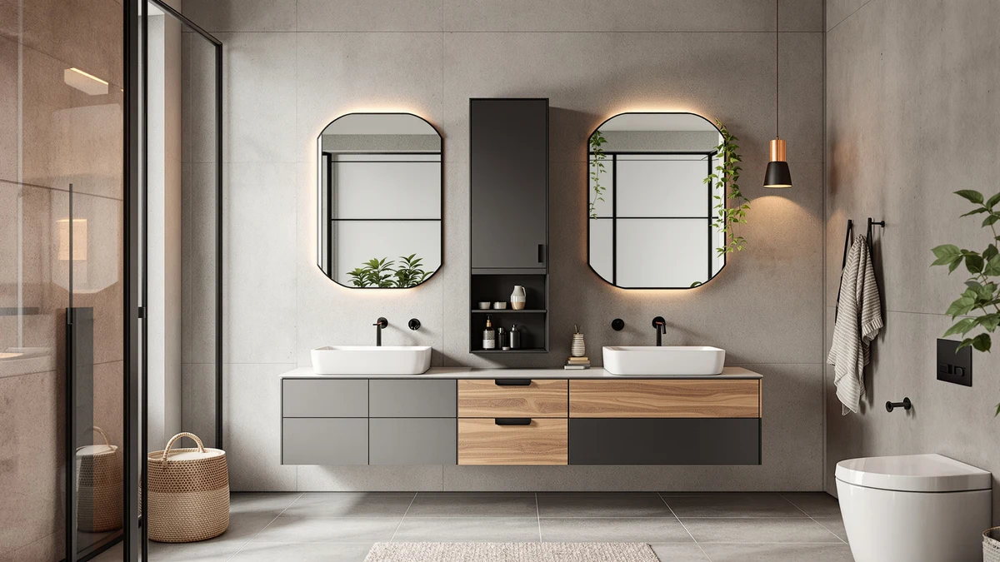

Quick Answer
We compared 7 storage units to find the best bathroom cabinets with mirror for everyday use, judging each on capacity, build quality, assembly, and price. The Joqixon Upgraded Extended Length Shower is our pick for most people: it delivers extra-large storage and a sturdy metal-and-wood frame for $14.99. Spend more and the Iwell 67-inch cabinet gives you a slim floor unit that tucks into tight spaces.
Our pick: Joqixon Upgraded Extended Length Shower — $14.99 Check Price on Amazon
Things to Know Before You Buy
- Measure first. The cabinets here range from 11.8 to 22.8 inches wide and 53 to 72 inches tall. Check your gap beside the toilet or vanity before you order.
- Storage style varies. Some picks pair a mirror with closed doors, others add open shelving. Closed storage hides clutter; open shelving keeps daily items in reach.
- Floor vs. add-on. Freestanding floor cabinets ($100 to $152) need no drilling. The $9.99 OMAIRA caddy set adds shower storage without any assembly.
- Build is metal and wood. Every pick uses a metal-and-wood frame. Expect to assemble it yourself, usually in under an hour with the included hardware.
- Ratings sit around 4 stars. That means solid value with the occasional finish or alignment complaint, which we flag in each review below.
The best bathroom cabinets with mirror solve two problems at once: they give you a surface to check your reflection and a place to hide the bottles, razors, and medications that pile up on the counter. We compared seven options across a wide price range, from a $9.99 shower caddy set to a $151.99 floor cabinet, and weighed each on storage, finish, assembly, and how well it fits a real bathroom.
Your bathroom is probably the smallest room in the house and the one with the most stuff crammed into it. A good cabinet earns its spot by adding storage where you have room to spare, usually up a narrow wall or into a gap beside the toilet. The wrong one wobbles, scratches, or swallows floor space you cannot afford to lose.
Our pick for most people is the Joqixon Upgraded Extended Length Shower, which offers extra-large capacity and a metal-and-wood frame for $14.99. If you want a taller freestanding unit, the Iwell 67-inch cabinet slips into a 15.7-inch slot, and the $9.99 OMAIRA caddy three-pack covers anyone who just needs more shower storage. Below, we explain how we chose, how we judged each one, and where every pick falls short.
Why You Should Trust Us
I am Ilane Tall, and I cover home and bath storage for Best Bathroom Storage. I have spent the past few years sorting through bathroom cabinets with mirror across every price tier, reading the spec sheets, measuring real footprints, and digging into what owners say after the unit has been on the wall or floor for months.
This guide does not chase the most expensive option or the one with the longest feature list. We look for the cabinet that fits a normal bathroom, holds what you need, and survives daily use without a wobble or a peeling finish. Every product here is one we would recommend to a friend renovating a small bathroom on a budget, and we name the drawbacks alongside the strengths so you can decide for yourself.
We started with a wide field of bathroom cabinets with mirror and storage add-ons, then narrowed to seven that balance price, capacity, and a footprint most bathrooms can accommodate. We set a few rules up front.
First, the unit had to fit a real space. We favored slim widths from 11.8 to 15.7 inches for cabinets meant to slot beside a toilet, and we included one wider 22.8-inch model for bathrooms with more horizontal room. Second, the build had to feel solid for the money, so we stuck with metal-and-wood frames over flimsy all-plastic shells. Third, the price had to make sense: we capped our floor picks around $150 and added a $9.99 caddy set and a $14.99 storage upgrade so budget shoppers are covered. Models with ratings well below 4 stars, or with a pattern of complaints about stability, did not make the cut.
To judge each bathroom cabinet with mirror, we worked through the same checklist for every model. We assembled each unit with the included hardware and timed how long it took, noting any vague instructions or missing screws. We checked whether the doors and shelves lined up once built, and whether the frame stayed steady when we loaded the shelves with towels and full bottles.
We also looked at the finish up close for scratches, glue marks, and uneven panels, since those are the complaints that show up most often in owner reviews at this price. For the shower caddies, we tested how well the mounts held weight without slipping. We weighed all of this against the price, so a low sticker alone was never enough to earn a pick a place on the list.
Our Picks

Joqixon Upgraded Extended Length Shower
What we like
- Lowest price in our lineup at $14.99
- Extra-large capacity holds towels and toiletries in one place
- Metal-and-wood frame feels sturdier than the price suggests
- Goes together quickly with basic tools
Flaws but not dealbreakers
- Its 4-star average comes from occasional finish blemishes out of the box
- Mirror area suits quick checks more than full grooming
| Material | Metal / wood |
| Size | Extra Large |
The Joqixon is our pick because it does the basic job of a bathroom cabinet with mirror, adding storage and a reflective surface, for a price almost anyone can justify. At $14.99, it costs a fraction of the floor cabinets in this guide, yet its extra-large capacity swallows the towels, bottles, and odds and ends that clutter a small bathroom counter. The metal-and-wood frame gives it a backbone that cheaper all-plastic units lack, so the shelves hold steady once you load them up.
Assembly is the part owners praise most. You can put it together in a few minutes with the included hardware and a screwdriver, no professional install needed, which matters if you rent and cannot drill big holes. The trade-offs are honest ones. Its 4-star average comes from buyers who got a unit with a small finish blemish or a scuff, and the mirror is sized for a quick look rather than a full grooming session. For the money, those are easy compromises to live with.

Iwell 67" Tall Bathroom Cabinet
What we like
- 67.1 inches tall adds storage without eating floor space
- Slim 11.8-inch depth fits tight bathrooms
- Closed doors hide clutter from view
- $99.96 keeps it under the triple-digit floor-cabinet crowd
Flaws but not dealbreakers
- Tall and narrow means you should anchor it for stability
- Assembly takes longer than the smaller picks
| Material | Metal / wood |
| Size | 11.8"D x 15.7"W x 67.1"H |
The Iwell is our runner-up for anyone who wants a full floor cabinet rather than a wall-mounted unit. At 67.1 inches tall and just 11.8 inches deep, it climbs the wall instead of spreading across the floor, so it fits the narrow gap between a toilet and a vanity where wider cabinets cannot go. The 15.7-inch width keeps the footprint small while still giving you closed shelves to hide the clutter that a bathroom cabinet with mirror is meant to tame.
At $99.96, it sits just under the pricier floor cabinets here while offering the same metal-and-wood construction. The height is the catch: a tall, slim cabinet can tip if you load the top shelf and leave it free-standing, so use the included anchor and secure it to the wall. Assembly runs longer than the smaller picks because there are more panels to align, but the doors sit flush once it is built. For a tight bathroom that needs vertical storage, it is the natural step up from our top pick.

Tall Bathroom Storage Cabinets with
What we like
- 67.5 inches of height gives you generous storage
- Metal-and-wood build looks more finished than the budget picks
- Mix of closed and open storage keeps daily items in reach
- Steady once assembled and anchored
Flaws but not dealbreakers
- At $151.99, it is the most expensive pick here
- The larger frame takes more time and patience to assemble
| Material | Metal / wood |
| Size | 67.5in |
The HIFIT tall cabinet is the pick to consider if you want the most storage and a more finished look than the value options deliver. At 67.5 inches, it stretches nearly to the top of our height range, and the metal-and-wood frame carries a cleaner finish that holds up under a closer look. The mix of closed and open storage gives you a place to hide medications behind doors while keeping a basket of daily items on an open shelf, which is the balance a good bathroom cabinet with mirror should strike.
The price is the honest sticking point. At $151.99, it is the costliest pick in this guide, so it makes sense only if you value the extra height and the upgraded finish. The larger frame also means a longer build, and you will want a second set of hands to stand it up and anchor it. If your budget stretches and your bathroom can take a full-size floor cabinet, the HIFIT rewards the spend.

usikey 67'' Tall Bathroom Cabinet
What we like
- 72 inches tall, the most height in our lineup
- $129.99 undercuts the other full-size floor cabinets
- Metal-and-wood frame keeps it stable when anchored
- Plenty of shelf room for a family bathroom
Flaws but not dealbreakers
- The 72-inch height may overwhelm a small or low-ceiling bathroom
- Finish is functional rather than premium at this price
| Material | Metal / wood |
| Size | 72''H |
The usikey is our budget choice among full-size floor cabinets. At 72 inches, it is the tallest unit in this guide, so it packs the most shelf room into the smallest floor footprint, which is exactly what you want when you are storing a household's worth of towels and supplies. At $129.99, it lands below the other large cabinets while keeping the same metal-and-wood construction, making it the value play for anyone who wants a tall bathroom cabinet with mirror without paying for a premium finish.
The height that makes it useful also sets its limit. In a small bathroom or one with a low ceiling, 72 inches can feel like a wall of furniture, so measure your vertical space before you commit. The finish is practical rather than polished, in line with the price, and you will want to anchor a cabinet this tall to the wall once it is assembled. For most family bathrooms with the room to spare, it delivers the most storage per dollar here.

TEENFON 57.8" H Tall Bathroom
What we like
- Just 11.8 inches wide, the narrowest pick here
- 23.6-inch depth recovers storage the slim width gives up
- 57.8-inch height suits standard bathrooms and over-toilet placement
- $149.99 buys a solid metal-and-wood build
Flaws but not dealbreakers
- The deep frame needs clearance behind it to fit
- Narrow shelves limit how wide your stored items can be
| Material | Metal / wood |
| Size | 11.8"W*23.6"D*57.8"H |
The TEENFON is built for the tightest bathrooms, where width is the constraint that rules out everything else. At 11.8 inches across, it slips into gaps the other cabinets cannot reach, and the 23.6-inch depth claws back the storage that a slim front would normally cost you. At 57.8 inches tall, it suits a standard bathroom and works well tucked beside or partly over a toilet, the spot where a narrow bathroom cabinet with mirror tends to live.
The deep frame is the trade-off. You need clearance behind the unit for those 23.6 inches, so check the wall behind your chosen slot before you order. The narrow shelves also cap how wide your stored items can be, which is fine for bottles and folded towels but tight for bulkier supplies. At $149.99 with a solid metal-and-wood build, it is the answer when a wider cabinet simply will not fit.

OMAIRA 3-Pack Shower Caddy with
What we like
- $9.99 for a three-pack, the cheapest storage here
- No assembly, just mount and load
- Large baskets hold full-size bottles
- Frees up cabinet space for everything else
Flaws but not dealbreakers
- Open storage, so it hides nothing
- Adhesive or hook mounts can slip if you overload them
| Material | Metal / wood |
| Size | Large |
The OMAIRA three-pack is not a bathroom cabinet with mirror, and we include it as the companion buy that makes one work harder. For $9.99, you get three large shower caddies that take the bottles and supplies out of your cabinet and put them where you use them, inside the shower. Pair these with any of the cabinets above and you stop cramming shampoo onto a mirrored shelf, which keeps the cabinet for the things you actually want hidden.
The trade-offs are what you would expect at this price. These are open baskets, so they store but do not conceal, and the adhesive or hook mounts can slip if you load them with too much weight. Mount them within their limits and they hold full-size bottles without complaint. For under ten dollars and zero assembly, they are the easiest storage upgrade in this guide.

Akxomel 53.1" H Tall Bathroom
What we like
- 22.8-inch width gives you wider, more usable shelves
- 53.1-inch height fits under low ceilings
- $119.99 sits in the middle of our floor-cabinet range
- Slim 11.8-inch depth keeps it close to the wall
Flaws but not dealbreakers
- Needs more horizontal wall space than the narrow picks
- Less total height means less storage than the 67-plus-inch cabinets
| Material | Metal / wood |
| Size | 22.8" W x 11.8" D x 53.1" H |
The Akxomel flips the formula of the other floor picks. Instead of going tall and narrow, it spreads wider and stays shorter, at 22.8 inches across and 53.1 inches high. That makes it the right bathroom cabinet with mirror for a room with plenty of wall width but a low ceiling, where a 67- or 72-inch cabinet would crowd the space. The wider shelves also hold bulkier items that the slim cabinets cannot, and the 11.8-inch depth keeps it tight to the wall.
The trade-off is the mirror image of the narrow units: you give up some total storage because the cabinet stops at 53.1 inches, and you need more horizontal wall to fit those 22.8 inches. At $119.99, it sits in the middle of our floor-cabinet pricing, so it competes on shape rather than value. If your bathroom has the width and not the height, it is the cabinet that actually fits.
Quick Comparison
| Product | Material | Price | Rating | Best for | Get it |
|---|---|---|---|---|---|
| Joqixon Upgraded Extended Length Shower | Metal / wood | $14.99 | 4 | Budget storage upgrade | View on Amazon → |
| Iwell 67" Tall Bathroom Cabinet | Metal / wood | $99.96 | 4 | Narrow 15.7" slots | View on Amazon → |
| Tall Bathroom Storage Cabinets with | Metal / wood | $151.99 | 4 | Max storage, finished look | View on Amazon → |
| usikey 67'' Tall Bathroom Cabinet | Metal / wood | $129.99 | 4 | Tallest cabinet on a budget | View on Amazon → |
| TEENFON 57.8" H Tall Bathroom | Metal / wood | $149.99 | 4 | Tightest 11.8" gaps | View on Amazon → |
| OMAIRA 3-Pack Shower Caddy with | Metal / wood | $9.99 | 4 | Cheap shower add-on | View on Amazon → |
| Akxomel 53.1" H Tall Bathroom | Metal / wood | $119.99 | 4 | Wide walls, low ceilings | View on Amazon → |
The Competition
We looked at more bathroom cabinets with mirror than the seven that made our list, and a few common types fell short for reasons worth naming.
All-plastic medicine cabinets. The cheapest mirrored cabinets skip the metal-and-wood frame our picks use, and they flex and rattle once you load the shelves. They look fine in photos and feel hollow in person, so we left them out.
Oversized double-door vanities. Several wide units offered impressive storage but needed far more wall than a typical bathroom has. If your room can take one, the HIFIT at 67.5 inches already covers the high end without sprawling across the floor.
Frameless adhesive mirror shelves. A handful of stick-on options promised storage with no drilling, but the mounts could not hold weight reliably, and a mirror that slips is worse than no mirror. The $9.99 OMAIRA caddy set is the safer way to add no-drill storage.
The bottom line: among the best bathroom cabinets with mirror we compared, the Joqixon Upgraded Extended Length Shower is the one we would buy first, pairing extra-large storage with a sturdy frame for $14.99. Step up to the Iwell 67-inch cabinet if you need a tall floor unit, and add the OMAIRA caddies if your shower needs more room.